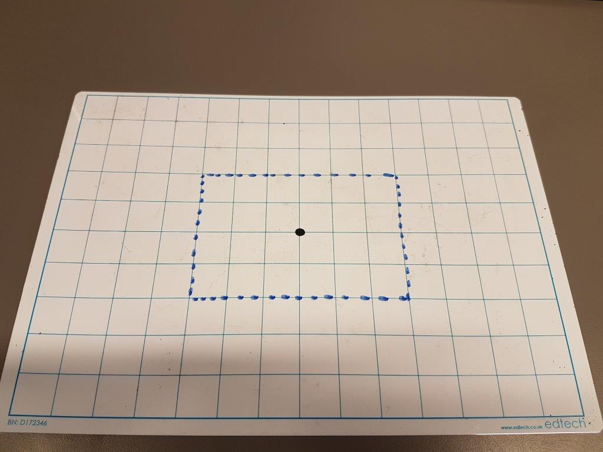
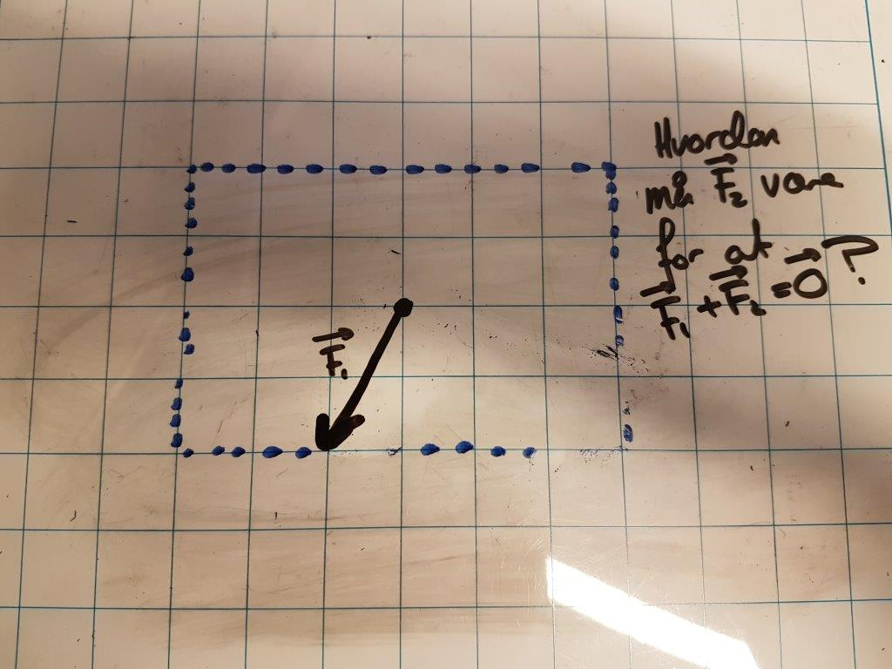
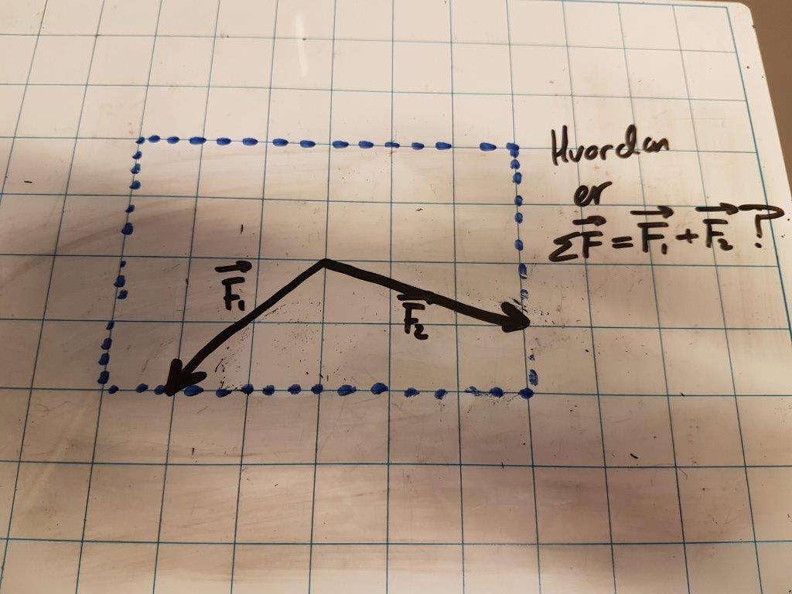
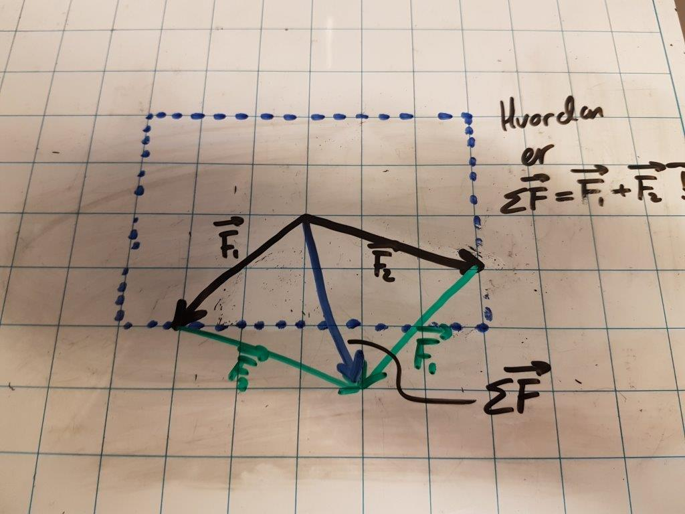
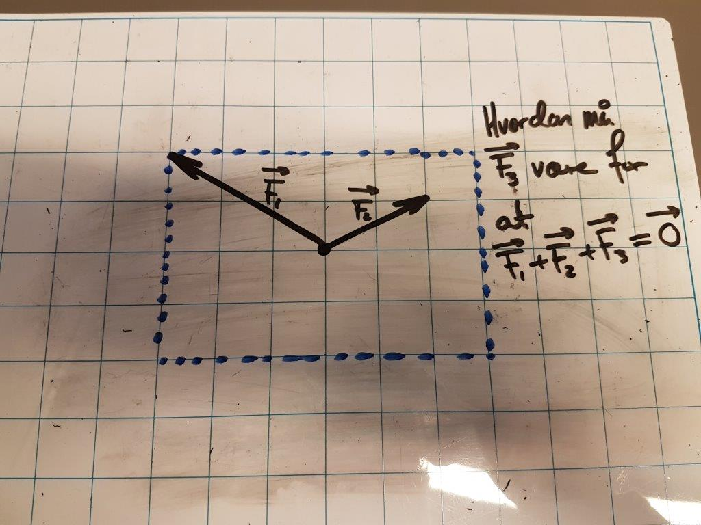
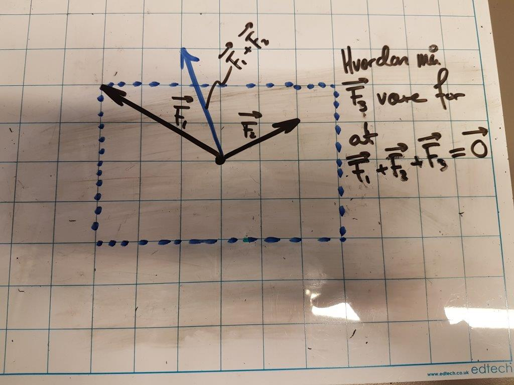
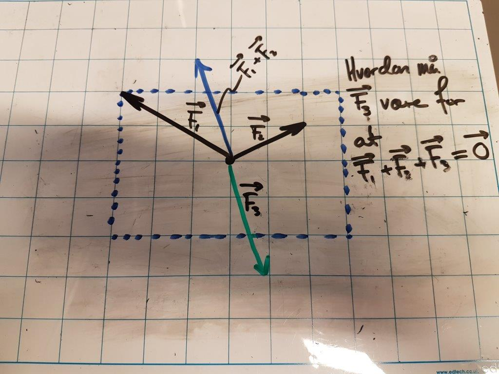

Vektorer
Fremgangsmåte
- høyre/venstre → neste/forrige oppgave
- opp/ned → løsningsforslag
- trykk ned nå
Startvektorene må ligge innenfor det stiplede området.



Oppgave
Tegn en kraftvektor \(\vec{F}\) og la den som sitter ved siden av deg finne \(\vec{F_2}\) slik at \(\Sigma \vec{F} = \vec{0}\).


Oppgave
Tegn to vektorer \(\vec{F_1}\) og \(\vec{F_2}\) og la den som sitter ved siden av deg finne \(\Sigma \vec{F}\)



Oppgave
Tegn to vektorer \(\vec{F_1}\) og \(\vec{F_2}\) og la den som sitter ved siden av deg finne \(\vec{F_3}\) slik at \(\Sigma \vec{F}=\vec{0}\).